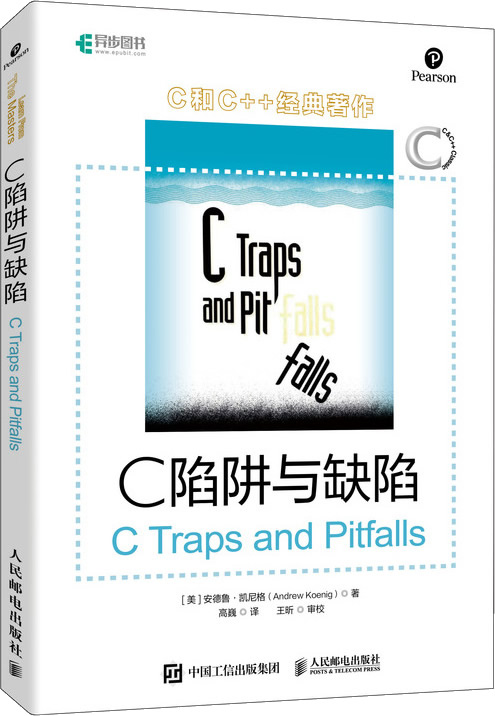

首页 > 书籍下载
《C陷阱与缺陷》PDF下载（高清完整版）
|  | 作者：[美]安德鲁·凯尼格（Andrew Koenig） |
| 译者：高巍 | |
| 出版时间：2020年08月01日 | |
| 出版社：人民邮电出版社 | |
| 书号ISBN：9787115521279 | |
| 总页数：174 |
这是一本非常经典的 C 语言书籍，中文版已经累计畅销超过 10W 册，适合有一定的 C 语言基础、想深入了解和学习 C 语言的读者。
这里提供的是《C陷阱与缺陷》的高清 PDF 下载，内容完整，附带目录标签。
这本书主要讲解 C 语言编程过程中可能遇到的各种陷阱，包括词法陷阱、语法陷阱、语义陷阱、链接、库函数、预处理器和可移植性陷阱。对于每个陷阱，书中都通过具体的案例进行演示，每一章的末尾还带领读者思考和讨论。
作为一名老程序员，无论你是刚学 C 语言的新手，还是 C 语言编程的高手，都推荐你阅读这本书，一定收获满满。
一位购买了这本书的读者评价这本书：
这本 C 陷阱与缺陷，讲述了很多 C 语言过程中容易出现的问题，对学习 C 语言有很大的帮助，也能避免很多坑。
还有一位读者也给出了好评：程序员案头必备书之一，推荐入手！
书籍目录
- 第1章 词法“陷阱” 5
- 1.1 =不同于== 6
- 1.2 & 和 | 不同于&& 和 || 8
- 1.3 词法分析中的“贪心法” 8
- 1.4 整型常量 10
- 1.5 字符与字符串 11
- 第2章 语法“陷阱” 15
- 2.1 理解函数声明 15
- 2.2 运算符的优先级问题 19
- 2.3 注意作为语句结束标志的分号 24
- 2.4 switch语句 26
- 2.5 函数调用 28
- 2.6 “悬挂”else引发的问题 28
- 第3章 语义“陷阱” 33
- 3.1 指针与数组 33
- 3.2 非数组的指针 39
- 3.3 作为参数的数组声明 41
- 3.4 避免“举隅法” 43
- 3.5 空指针并非空字符串 44
- 3.6 边界计算与不对称边界 45
- 3.7 求值顺序 57
- 3.8 运算符&&、|| 和 ! 59
- 3.9 整数溢出 61
- 3.10 为函数main提供返回值 62
- 第4章 链接 65
- 4.1 什么是链接器 65
- 4.2 声明与定义 67
- 4.3 命名冲突与static修饰符 69
- 4.4 形参、实参与返回值 70
- 4.5 检查外部类型 77
- 4.6 头文件 80
- 第5章 库函数 83
- 5.1 返回整数的getchar函数 84
- 5.2 更新顺序文件 85
- 5.3 缓冲输出与内存分配 86
- 5.4 使用errno检测错误 88
- 5.5 库函数signal 89
- 第6章 预处理器 93
- 6.1 不能忽视宏定义中的空格 94
- 6.2 宏并不是函数 94
- 6.3 宏并不是语句 99
- 6.4 宏并不是类型定义 101
- 第7章 可移植性缺陷 103
- 7.1 应对C语言标准变更 104
- 7.2 标识符名称的限制 106
- 7.3 整数的大小 107
- 7.4 字符是有符号整数还是无符号整数 108
- 7.5 移位运算符 109
- 7.6 内存位置0 110
- 7.7 除法运算时发生的截断 111
- 7.8 随机数的大小 113
- 7.9 大小写转换 113
- 7.10 首先释放，然后重新分配 115
- 7.11 可移植性问题的一个例子 116
- 第8章 建议与答案 123
- 8.1 建议 124
- 8.2 答案 128
- 附录
- 附录A printf、varargs与stdarg 147
- 附录B Koenig和Moo夫妇访谈 169
书籍下载
一键登录，免费下载完整版 PDF，文件名称：《C陷阱与缺陷》.pdf